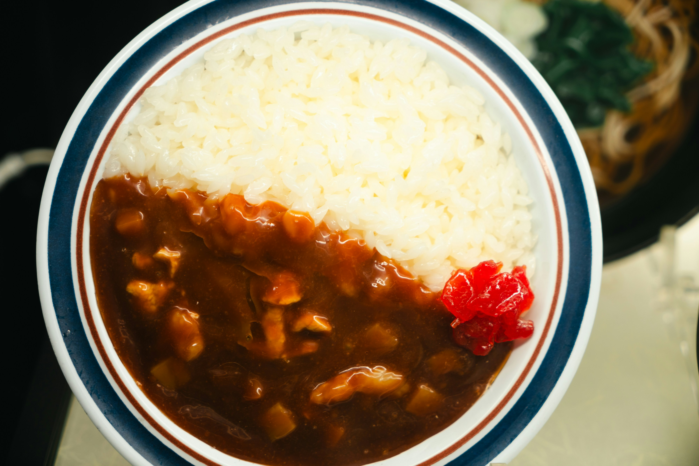

Japanese Curry Rice
Home

Description
Japanese curry rice is a staple of the Japanese kitchen. It is the quintessential comfort food and has a weekly place on the dinner tables of many Japanese families.
It is also one of the most internationally known Japanese dishes outside of the country.
Ingredients
- Boneless, skinless chicken thigh
- Carrots
- Potatoes
- Onions
- Garlic
- Ginger
- Japanese curry rue
Steps
- Cut the meat and vegetables into bite-sized pieces
- Sauté the chicken in a non-stick pot on medium heat until nicely seared on the surface, then set aside
- Sauté the vegetables in a non-stick pot, add in the sauteed chicken and enough liquid (either water or stock) to cover the ingredients
- Get the ingredients to a boil, then simmer for 20 minutes under low heat, checking occasionally to make sure the water hasn't completely evaporated
- Add the curry rue to the pot and stir to help it dissolve
- Once the rue has dissolved, the curry will thicken
- Season to taste with salt, pepper, soy sauce and honey
- Serve the dish hot with rice, and enjoy!